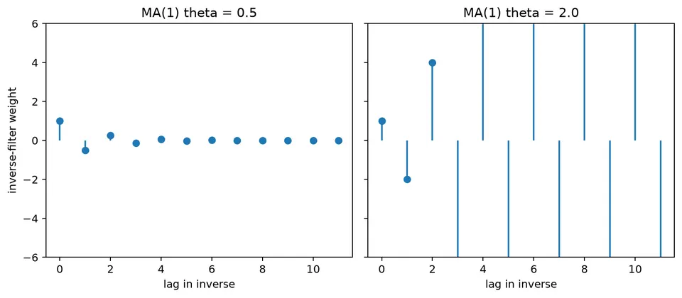
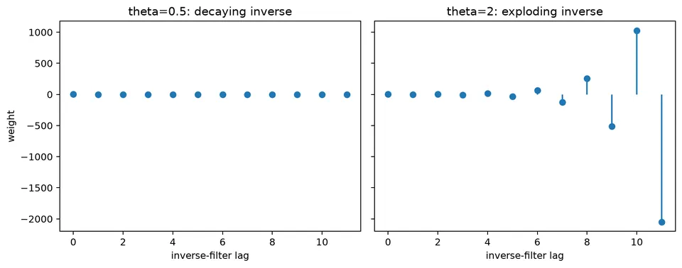

Invertibility in Time Series Models
An MA(1) equation tells us how a current shock and a previous shock combine to form an observation. In practice, however, we observe the combination, not the shocks. To estimate residuals and forecast recursively, we need to work backward from observations to a plausible shock history. Invertibility is the condition that makes this past-based reconstruction stable.
Stability matters because the available record begins at a finite date. A useful reconstruction gradually forgets an arbitrary starting guess for an unobserved shock. An unstable reconstruction magnifies that guess, so using more observations does not repair the problem.
Invertibility also chooses among MA specifications that have the same covariance pattern. A parameter and its reciprocal can describe the same MA(1) autocorrelation after the shock variance is rescaled. The invertible form supplies a conventional, stable representation of that observed second-order behavior. It does not by itself identify a unique physical mechanism for generating the shocks.
Worked calculation: two MA(1) inverse filters
For an MA(1),
$$ X_t=(1+\theta B)\varepsilon_t. $$
If $\theta=0.5$, the inverse is
$$ \varepsilon_t=(1-0.5B+0.25B^2-0.125B^3+\cdots)X_t. $$
For $\theta=0.5$, the coefficients attached to increasingly old observations shrink by a factor of one half. For $\theta=2$, they alternate and grow as $1,-2,4,-8,\ldots$. The issue is not that the second MA process has an infinite observation variance; a finite MA filter is stationary under weak-white-noise shocks. The issue is that this particular past-based inverse does not suppress the effect of a distant starting error.

Recovering shocks from observations
In time-series modeling, invertibility means that the innovation sequence can be recovered as a stable function of the observed series and its past values. The concept is especially important for moving-average models, whose equations use unobserved current and lagged shocks. For the uncentered case, subtract the process mean before applying the zero-mean inverse formulas below.
Intuition Behind Invertibility
The forward equation is easy to evaluate if the shocks are supplied. The inverse must infer them from the observed mixtures. For MA(1), the recursion is $\hat Z_t=X_t-\beta\hat Z_{t-1}$. If two reconstructions start with different guesses, their difference at the next step is multiplied by $-\beta$. This gives a direct operational interpretation of the condition $|\beta|<1$: the initialization error fades rather than expands.
A stable inverse makes estimated innovations reproducible when the initial guess or retained history changes. The representation convention also avoids reporting reciprocal parameter sets as distinct discoveries when they imply the same observed covariance function. These are related benefits, but neither means that the data reveal an unobserved shock without uncertainty: parameters and starting states still have to be estimated.
Mathematical Definition of Invertibility
A process $\{X_t\}$ is invertible if its innovation $Z_t$ can be written as a convergent linear filter of present and past observations:
$$ Z_t=\sum_{k=0}^{\infty}\pi_kX_{t-k}. $$
A common sufficient stability condition is absolute summability,
$$ \sum_{k=0}^{\infty}|\pi_k|<\infty. $$
Absolute summability bounds the total influence of distant observed values and is a convenient sufficient stability condition. For a finite-order MA polynomial, roots outside the unit circle lead to inverse coefficients that decay geometrically. Near the boundary they can decay slowly, so a theoretically invertible model may still require a long initialization period before an estimated shock history becomes insensitive to starting values.
Why is Invertibility Important?
Invertibility provides a unique, stable representation of an MA process under the usual root convention. It makes the recovered innovations usable for residual diagnostics and recursive forecasting, and it avoids interpreting observationally equivalent coefficient sets as different models.
A non-invertible MA specification can still be written and numerically fitted, but it is not the canonical representation and can create identification and optimization problems. Software therefore commonly reports the invertible equivalent whenever one exists.
Move the lagged-observation terms of the inverse equation to the other side and the MA process acquires an infinite autoregressive form. That does not make it a finite AR model: the inverse generally contains infinitely many lags. The distinction is between a finite shock response in the forward equation and an infinite but decaying observation history in the inverse.
General Conditions for Invertibility
For an MA($q$),
$$ X_t=Z_t+\theta_1Z_{t-1}+\theta_2Z_{t-2}+\dots+\theta_qZ_{t-q}, $$
define the MA polynomial
$$ \theta(z)=1+\theta_1z+\theta_2z^2+\dots+\theta_qz^q. $$
The process is invertible under the standard convention when every root of
$$ \theta(z)=0 $$
lies outside the unit circle. This root condition, rather than a separate bound on each individual coefficient, is the general criterion for MA($q$) models.
Example: MA(1) Process
Consider
$$ X_t=Z_t+\beta Z_{t-1}, $$
where $Z_t$ is white noise with mean 0 and variance $\sigma_Z^2$.
Inversion Using Backward Substitution
Rearrange the model as
$$ Z_t=X_t-\beta Z_{t-1}. $$
Substitute the same relation for $Z_{t-1}$:
$$ Z_t=X_t-\beta(X_{t-1}-\beta Z_{t-2}) =X_t-\beta X_{t-1}+\beta^2Z_{t-2}. $$
Repeating the substitution gives
$$ Z_t=X_t-\beta X_{t-1}+\beta^2X_{t-2}-\beta^3X_{t-3}+\dots. $$
Equivalently,
$$ Z_t=\sum_{k=0}^{\infty}(-\beta)^kX_{t-k}. $$
At each substitution, one more observed value enters and the unrecovered shock is pushed one date farther into the past. Its coefficient becomes another power of $-\beta$. With $|\beta|<1$, the boundary term vanishes in mean square under finite-variance shocks, which justifies the infinite expression. Writing the expression down formally is not itself proof that this boundary term disappears.
Inversion Using the Backward Shift Operator
Write the MA(1) as
$$ X_t=(1+\beta B)Z_t. $$
Formally inverting the operator gives
$$ Z_t=(1+\beta B)^{-1}X_t. $$
For $|\beta|<1$, the geometric expansion is
$$ (1+\beta B)^{-1} =1-\beta B+\beta^2B^2-\beta^3B^3+\dots. $$
Therefore,
$$ Z_t=X_t-\beta X_{t-1}+\beta^2X_{t-2}-\beta^3X_{t-3}+\dots, $$
which is the same inverse obtained by backward substitution. The operator form makes clear that invertibility is a property of the MA polynomial.
Example: MA(2) Process
Consider
$$ X_t=Z_t+\theta_1Z_{t-1}+\theta_2Z_{t-2}. $$
The MA polynomial is
$$ 1+\theta_1z+\theta_2z^2. $$
For $\theta_1=0.5$ and $\theta_2=0.3$,
$$ 1+0.5z+0.3z^2=0. $$
The roots are
$$ z=\frac{-0.5\pm\sqrt{0.25-1.2}}{0.6} =\frac{-0.5\pm i\sqrt{0.95}}{0.6}. $$
They are complex conjugates. Because their product is $1/0.3$, each root has modulus
$$ |z|=\sqrt{\frac{1}{0.3}}\approx1.826>1. $$
Both roots therefore lie outside the unit circle, so this MA(2) specification is invertible.
The coefficient values 0.5 and 0.3 are not tested independently. They jointly determine the two roots of one polynomial, and both root moduli must be checked. A model with a small coefficient at every lag can still fail the root condition; conversely, an invertible higher-order polynomial can contain a coefficient with magnitude above 1. Use the complete polynomial, with the model's actual sign convention.
Convergence of the Series in MA Models
The inverse representation is useful only if truncating it after many lags gives a progressively better approximation to the innovation. In an invertible model, the inverse-filter coefficients decay, so increasingly distant observations contribute less.
Understanding Mean-Square Convergence
For the MA(1),
$$ Z_t=X_t-\beta X_{t-1}+\beta^2X_{t-2}-\beta^3X_{t-3}+\dots. $$
Mean-square convergence asks whether the expected squared reconstruction error tends to zero as the retained history grows. In the MA(1) substitution, that error is a distant shock multiplied by a power of $-\beta$, so its mean square contains $\beta^{2(n+1)}\sigma_Z^2$. This calculation explains why decaying inverse weights are sufficient here and why the boundary $|\beta|=1$ does not give the usual stable inverse.
Condition for Convergence: $|\beta|<1$
For MA(1), the inverse coefficients are powers of $-\beta$. Thus:
- if $|\beta|<1$, the weights decay and the standard past-based inverse is stable;
- if $|\beta|=1$, the weights do not decay;
- if $|\beta|>1$, the weights grow in the direct geometric expansion.
Therefore the standard MA(1) invertibility condition is
$$ |\beta|<1. $$
This condition is equivalent to requiring the zero $z=-1/\beta$ of $1+\beta z$ to lie outside the unit circle.
Generalization to Higher-Order MA Models
For
$$ X_t=Z_t+\theta_1Z_{t-1}+\dots+\theta_qZ_{t-q}, $$
the same idea applies, but the coefficients of the inverse filter are determined by the roots of
$$ 1+\theta_1z+\dots+\theta_qz^q=0. $$
The model is invertible when all of these roots lie outside the unit circle. It is not necessary, and is not sufficient in general, to require every $|\theta_j|<1$ separately.
Example: MA(1) Process
For
$$ X_t=Z_t+\beta Z_{t-1}, $$
the inverse is
$$ Z_t=X_t-\beta X_{t-1}+\beta^2X_{t-2}-\beta^3X_{t-3}+\dots. $$
With $|\beta|<1$, the weights decay as the lag increases. The recovered innovation can therefore be approximated using a sufficiently long but finite history of observed values.
The figure below visualizes this contrast between decaying and expanding inverse-filter weights.

Initialization error and equivalent MA representations
The numerical comparison below concerns two separate objects: a finite forward shock equation and its proposed infinite inverse. Both parameter choices can generate legitimate stationary MA observations. Only the choice with a decaying past-based inverse forgets the reconstruction's starting error. Keeping those statements separate prevents invertibility from being confused with stationarity.
MA(1) calculation
With
$$ y_t=(1+\theta B)\varepsilon_t, $$
the formal inverse is
$$ \varepsilon_t =(1+\theta B)^{-1}y_t =\left(1-\theta B+\theta^2B^2-\theta^3B^3+\cdots\right)y_t. $$
For $\theta=0.5$, the first weights are
$$ 1,\ -0.5,\ 0.25,\ -0.125. $$
They decay geometrically. For $\theta=2$, the corresponding direct expansion starts
$$ 1,\ -2,\ 4,\ -8, $$
and grows instead. The second representation is therefore not the stable past-based inverse.
Root condition
For a nonzero MA(1) coefficient, the MA polynomial is
$$ \theta(B)=1+\theta B. $$
Its zero is $B=-1/\theta$. Invertibility requires
$$ \left|-\frac{1}{\theta}\right|>1 \quad\Longleftrightarrow\quad |\theta|<1. $$
For higher-order MA models, every zero of the MA polynomial must lie outside the unit circle. If the MA(1) coefficient is zero, the model is already white noise: the polynomial is the constant 1 and the inverse is the identity, so no reciprocal-root calculation is needed.
Why equivalent models appear
For an MA(1),
$$ \gamma(0)=\sigma^2(1+\theta^2), \qquad \gamma(1)=\sigma^2\theta. $$
For $\theta\ne0$, replacing $\theta$ by $1/\theta$ preserves the lag-1 autocorrelation. Rescaling the innovation variance from $\sigma^2$ to $\theta^2\sigma^2$ also preserves the variance and hence the complete autocovariance function. Under Gaussian assumptions, that matching covariance structure gives the same observed process distribution; without Gaussianity, it is a second-order equivalence. Second-order observations alone therefore cannot choose between the two parameterizations. Invertibility supplies the convention that selects the representation with a decaying inverse filter.
Practical implications
Inspect the fitted roots and the model equation together. A root close to the unit circle means that a distant initialization error can remain influential for many observations, so compare reconstructions under different starting values or history lengths. If software reports an invertible equivalent, compare its implied variance and autocovariances with the original specification before interpreting the coefficient change. The new coefficient may express the same second-order process in the standard representation.
Formula reference
| Concept | General formula | Condition / interpretation |
|---|---|---|
| MA polynomial | $X_t=\theta(B)\varepsilon_t$, $\theta(B)=1+\theta_1B+\cdots+\theta_qB^q$ | Maps current and past innovations into observations. |
| Inverse representation | $\varepsilon_t=\theta(B)^{-1}X_t=\sum_{k=0}^{\infty}\pi_kX_{t-k}$ | Invertibility requires a stable past-based inverse filter. |
| Root condition | $\theta(z)=0\Rightarrow \lvert z\rvert>1$ | Every zero of the MA polynomial must lie outside the unit circle. |
| MA(1) | $X_t=(1+\theta B)\varepsilon_t$ | Invertible iff $\lvert\theta\rvert<1$. |
| MA(1) inverse | $(1+\theta B)^{-1}=\sum_{k=0}^{\infty}(-\theta)^kB^k$ | Geometric expansion converges when $\lvert\theta\rvert<1$. |
| General inverse recursion | $\pi_0=1$, $\pi_k=-\sum_{j=1}^{\min(k,q)}\theta_j\pi_{k-j}$ | Generates the coefficients of $\theta(B)^{-1}$. |
| ARMA($p,q$) | $\phi(B)X_t=\theta(B)\varepsilon_t$ | Invertibility is controlled by MA roots; causality/stationarity by AR roots. |
| Seasonal MA part | $\Theta(B^s)=1+\Theta_1B^s+\cdots+\Theta_QB^{Qs}$ | Seasonal MA roots must also satisfy the invertibility root condition. |
| Absolute-summability criterion | $\sum_{k=0}^{\infty}\lvert\pi_k\rvert<\infty$ | A strong sufficient condition for a stable inverse filter. |
| Canonical MA(1) choice | $(\theta,\sigma^2)$ versus $(1/\theta,\theta^2\sigma^2)$ | These can have the same autocovariances; choose the invertible representation. |